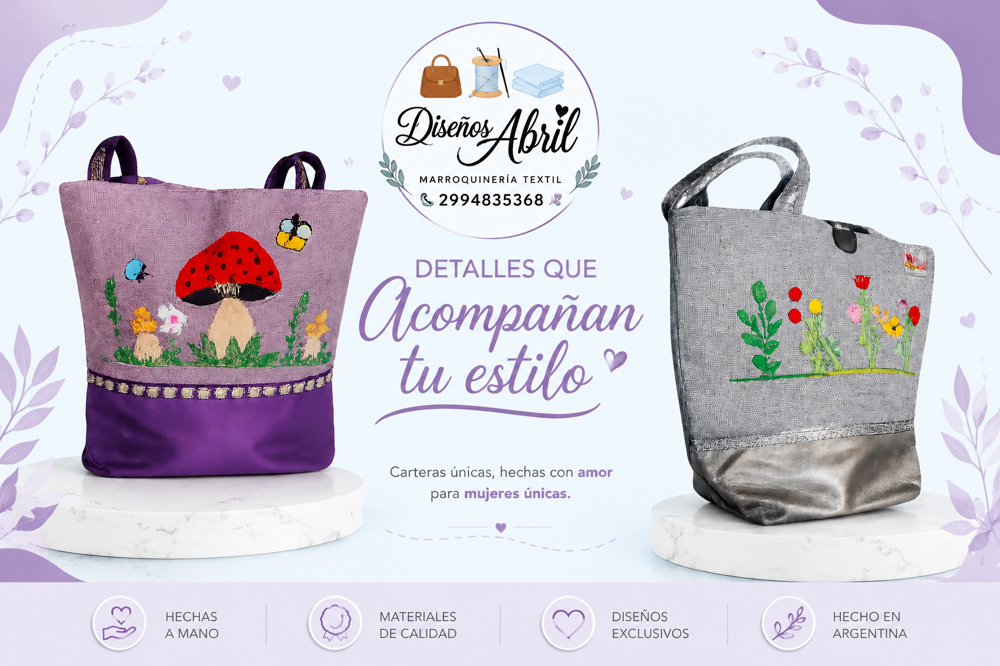
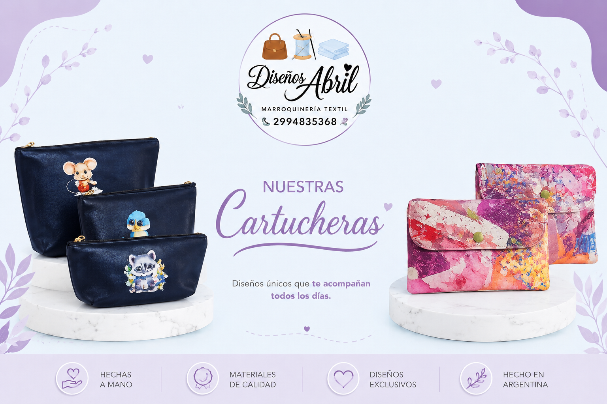
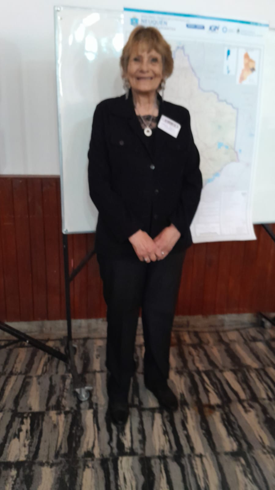

👜 Bolsos Artesanales
Nuestros bolsos están confeccionados con dedicación y atención a cada detalle. Cada diseño es único, combinando colores, texturas y dibujos pintados a mano que reflejan la creatividad y el trabajo de nuestra familia. Son ideales para quienes buscan accesorios originales y hechos con amor.
Ver carteras
✨Cartucheras Sublimadas
Nuestras cartucheras están diseñadas para acompañarte todos los días con estilo. Decoradas con delicadas ilustraciones y acabados de calidad, ofrecen practicidad y un toque especial que las hace diferentes. Cada pieza es elaborada artesanalmente, convirtiéndola en un producto único y exclusivo.
Ver cartucheras
Graciela Boschi
Graciela es una artesana por naturaleza.
Desde joven se dedico a emprender.
Este nuevo emprendimiento nace del deseo de compartir sus
conocimientos,
habilidades y sus originales diseños a la comunidad.